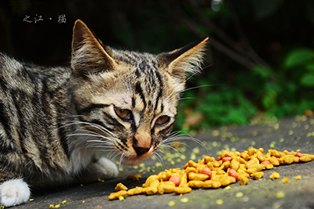
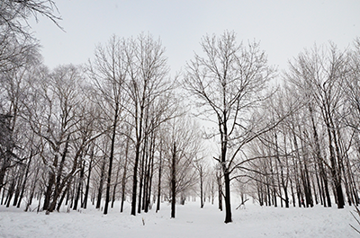
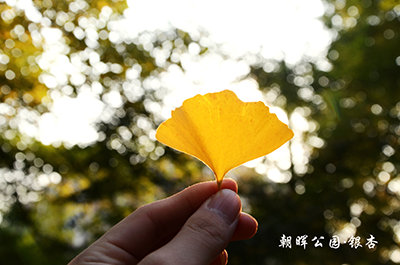
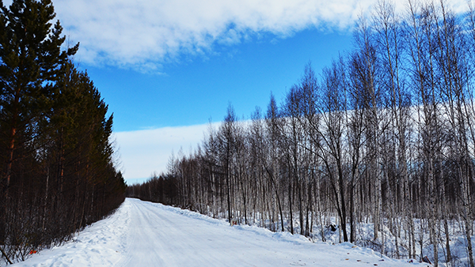

老和山技校烟酒僧
前端人
北至漠河,南走三亚
摄影
单身汪
古越剡东
勤奋乐观
用一杯水的平静，面对一辈子的复杂
Know more about me
Click for wangsong1299.me
My photos during travel
Open the Sidebar
Zhejiang University
大不自多 海纳江河
惟学无际 际于天地
形上谓道兮 形下谓器
礼主别异兮 乐主和同
知其不二兮 尔听斯聪
国有成均 在浙之滨
昔言求是 实启尔求真
Just like it
javascript,css,html
bootstrap,easyui,jquery,jquery mobile,
angularJS,reactJS
python,django
php,thinkphp
node,means,mongodb,express,angularJS,nodeJS
喜欢旅游
走遍中国和世界是我的梦想
走了13个省，40+个城市
通宵爬过华山
露营睡过舟山
单天骑行200公里去过天荒坪
流浪东北走走停停过了帮个月
有好多旅行的故事
存在并且延续
眼睛是最棒的相机
  
喜欢一个人 喜欢一个人
上天不给我的，无论我十指怎样紧扣，仍然走漏；
给我的，无论过去我怎么失手，都会拥有。
刻意去找的东西，往往是找不到的。
天下万物的来和去，都有他的时间。
心之何如，有似万丈迷津，遥亘千里，
其中并无舟子可以渡人，除了自渡，他人爱莫能助。
如果有来生，要做一棵树，站成永恒，没有悲伤的姿势：
一半在尘土里安详，一半在空中飞扬；
一半散落阴凉，一半沐浴阳光。
非常沉默，非常骄傲，从不依靠从不寻找。
新昌
青年路小学 /
城关中学 /
新昌中学 /
我在长大 /
远离了家乡 /
一切都在变 /
恍了时光
信电人，勤奋又乐观
Do you think this is Awesome?
Yes
No
